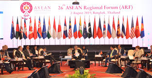
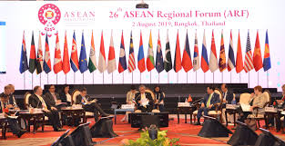

Perserikatan Bangsa-Bangsa (PBB) atau United Nations adalah organisasi internasional yang hampir mencakup seluruh negara di dunia. Didirikan pada tahun 1945 setelah Perang Dunia II, PBB bertujuan untuk mencegah konflik serupa di masa depan melalui upaya kolektif dalam memperkuat hubungan internasional, mempertahankan perdamaian, dan meningkatkan kerja sama global di berbagai bidang seperti ekonomi, sosial, budaya, dan kemanusiaan.
Dalam keanggotaan PBB, Indonesia berperan aktif dan memiliki kontribusi signifikan di berbagai sektor. Keterlibatan Indonesia dalam PBB mencakup berbagai komite dan badan khusus, termasuk ECOSOC (Economic and Social Council), ILO (International Labour Organization), dan FAO (Food and Agriculture Organization). Melalui keterlibatan ini, Indonesia dapat mengadvokasi kebijakan yang mendukung pembangunan ekonomi berkelanjutan, perlindungan tenaga kerja, serta ketahanan pangan yang menjadi prioritas nasional.
ECOSOC adalah salah satu dari enam badan utama PBB yang bertanggung jawab untuk mengkoordinasikan upaya ekonomi dan sosial internasional. Partisipasi Indonesia dalam ECOSOC memungkinkan negara ini untuk terlibat dalam diskusi dan pembuatan kebijakan yang berdampak langsung pada pembangunan sosial dan ekonomi global.
ILO adalah badan PBB yang berfokus pada isu-isu perburuhan dan standar kerja internasional. Keterlibatan Indonesia dalam ILO membantu negara ini untuk memperkuat kebijakan ketenagakerjaan domestik, meningkatkan kondisi kerja, dan mempromosikan hak-hak pekerja, sehingga mendukung pembangunan ekonomi yang inklusif dan adil.
FAO adalah badan PBB yang berfokus pada peningkatan produksi pangan dan pertanian di seluruh dunia. Melalui FAO, Indonesia dapat berkolaborasi dengan negara lain untuk mengembangkan teknik pertanian yang lebih efektif, mengatasi tantangan perubahan iklim, dan memastikan ketahanan pangan bagi seluruh masyarakat.
Selain kontribusi dalam badan-badan tersebut, Indonesia juga menunjukkan komitmennya terhadap perdamaian dunia melalui pengiriman Pasukan Garuda untuk misi perdamaian PBB. Pasukan ini telah berpartisipasi dalam berbagai misi di negara-negara yang mengalami konflik, seperti Lebanon, Kongo, dan Sudan. Misi ini tidak hanya menunjukkan dedikasi Indonesia terhadap prinsip perdamaian yang diabadikan dalam pembukaan UUD 1945, tetapi juga membantu menciptakan stabilitas dan keamanan di wilayah-wilayah konflik tersebut.
Dalam konteks ini, pembukaan UUD 1945 yang menyatakan bahwa Indonesia bertujuan untuk menjaga ketertiban dunia berdasarkan kemerdekaan, perdamaian abadi, dan keadilan sosial, tercermin dalam partisipasi aktif Indonesia di PBB. Komitmen ini menunjukkan bahwa Indonesia tidak hanya berfokus pada kepentingan nasional tetapi juga pada kontribusi positif terhadap masyarakat global, melalui kerja sama internasional yang bermanfaat bagi kesejahteraan seluruh umat manusia.
Perhimpunan Bangsa-Bangsa Asia Tenggara (ASEAN) atau Association of Southeast Asian Nations adalah organisasi regional yang terdiri dari sepuluh negara anggota di Asia Tenggara. Didirikan pada tahun 1967, ASEAN bertujuan untuk memajukan kerja sama ekonomi, politik, keamanan, sosial, dan budaya di antara negara-negara anggotanya, serta menjaga perdamaian dan stabilitas di kawasan ini.
Dalam keanggotaan ASEAN, Indonesia memainkan peran yang sangat aktif dan penting. Sebagai salah satu negara pendiri, Indonesia telah berkontribusi secara signifikan dalam berbagai inisiatif dan program ASEAN. Berikut adalah beberapa kontribusi penting Indonesia dalam lingkup ASEAN:
Peran aktif Indonesia dalam ASEAN tidak hanya memperkuat posisi regionalnya tetapi juga memberikan manfaat nyata bagi masyarakat Indonesia. Melalui kerja sama ini, Indonesia dapat mendorong pembangunan ekonomi, meningkatkan kualitas hidup, dan memastikan stabilitas serta keamanan di kawasan Asia Tenggara.